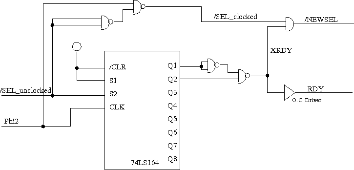
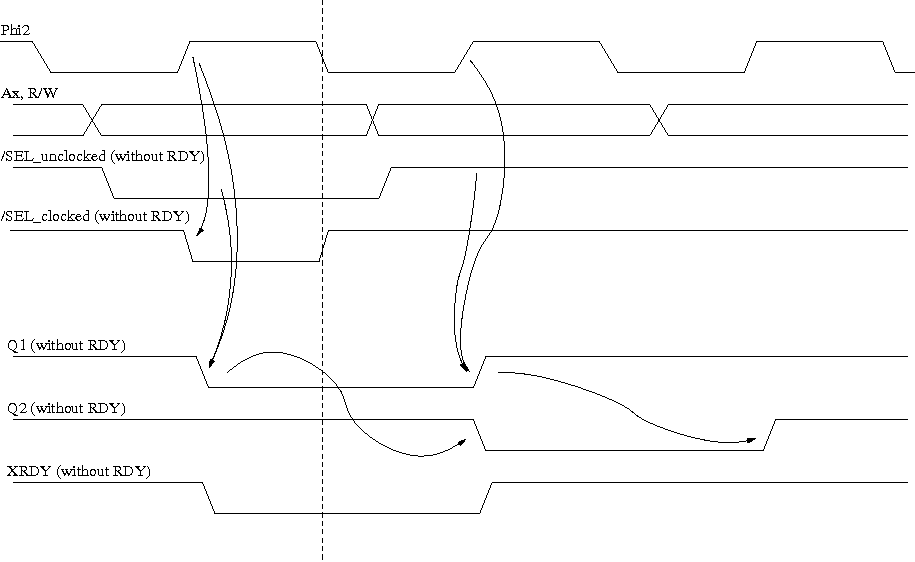

This article describes a generic schematics for the generation of the RDY line used by the 65C02 processor to hold bus accesses when the device is not ready.
You think this is not necessary nowadays, where everything is way faster than the one or two MHz the 6502 runs at. Well, actually I recently found a chip that was too slow for my 2 MHz 65C02 system, so I developed this schematics.
Please note that the schematics works for a CMOS 65C02 only - not an NMOS 6502. This is due to two facts:
This schematics describes how I attached the Philips P8584 I2C controller to a 65C02 system. I found that the chip worked well with the system running on 1 MHz, but not on 2 MHz. It only started working when I used RDY to halt the CPU for a cycle when accessing the chip.
This schematics creates the RDY signal, but a similar schematics can be used to create other clocked signals as well.
This section describes the signals as used in the schematics.
The following diagram shows the schematics
The main IC used for the generation is the shift register 74LS164. It is clocked with the Phi2 clock signal, and shifts the /SEL_unclocked signal through its output signals. With a combination of the output signals the new XRDY signals is created. The timing diagrams below show how it works.
This type of schematics can be used to create many types of signals, using different combinations of the shift register output values. Creating XRDY with Q1 and Q2 is only one example. Using Q3 instead of Q2 for example would make the RDY pulse two clock cycles long, not one. You could also use a higher shift register clock and shift the Phi2 signal through the shift register, and use combinations of the output signals e.g. for RAM timing signals.
This diagram shows the principle timing, but without RDY being pulled from XRDY.
Phi2 shows the central CPU timing signal. Ax,R/W shows where the address lines and R/-W are stable. /SEL_unclocked is the select signal that is derived from the CPU address lines. /SEL_clocked is this select signal combined with Phi2.
The Q1 and Q2 lines show how the /SEL_unclocked line is clocked through the shift register output lines. The XRDY line is cmbined from Q1 being low and Q2 being high.
The following diagram shows the signals with the RDY line asserted from XRDY.

The /SEL_clocked line now shows two active periods, as it is combined with Phi2 that is going inactive during Phi1. Therefore the /NEWSEL line is generated using the /SEL_clocked and XRDY line.
Note: it is important, that the Phi2 going high signals arrives a the AND-gate before the shift register and Q1/Q2 logic releases XRDY, so that there is no inactive spike on the /NEWSEL line. This is accomplished by the gate delay times.
(C) 2006 André Fachat